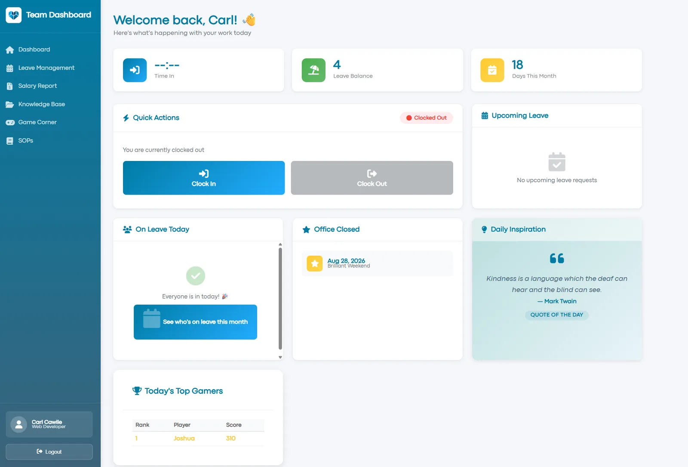
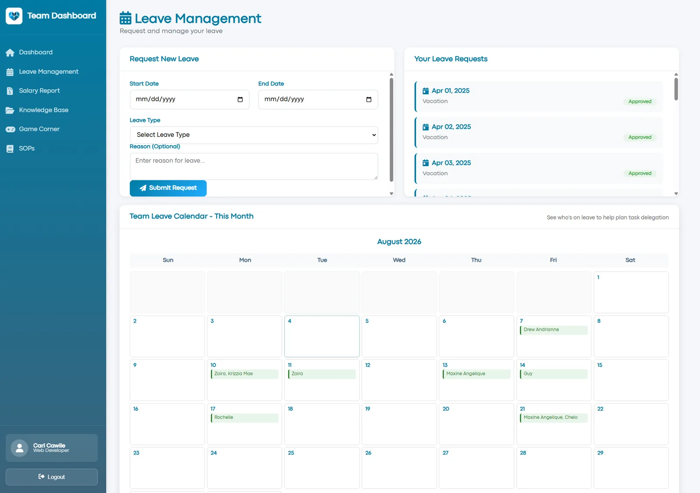
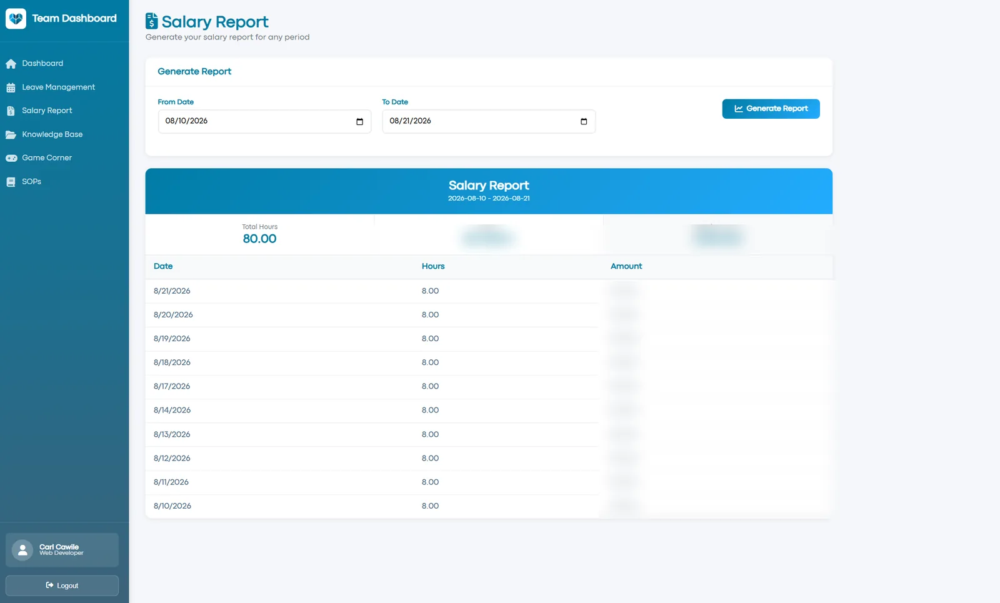
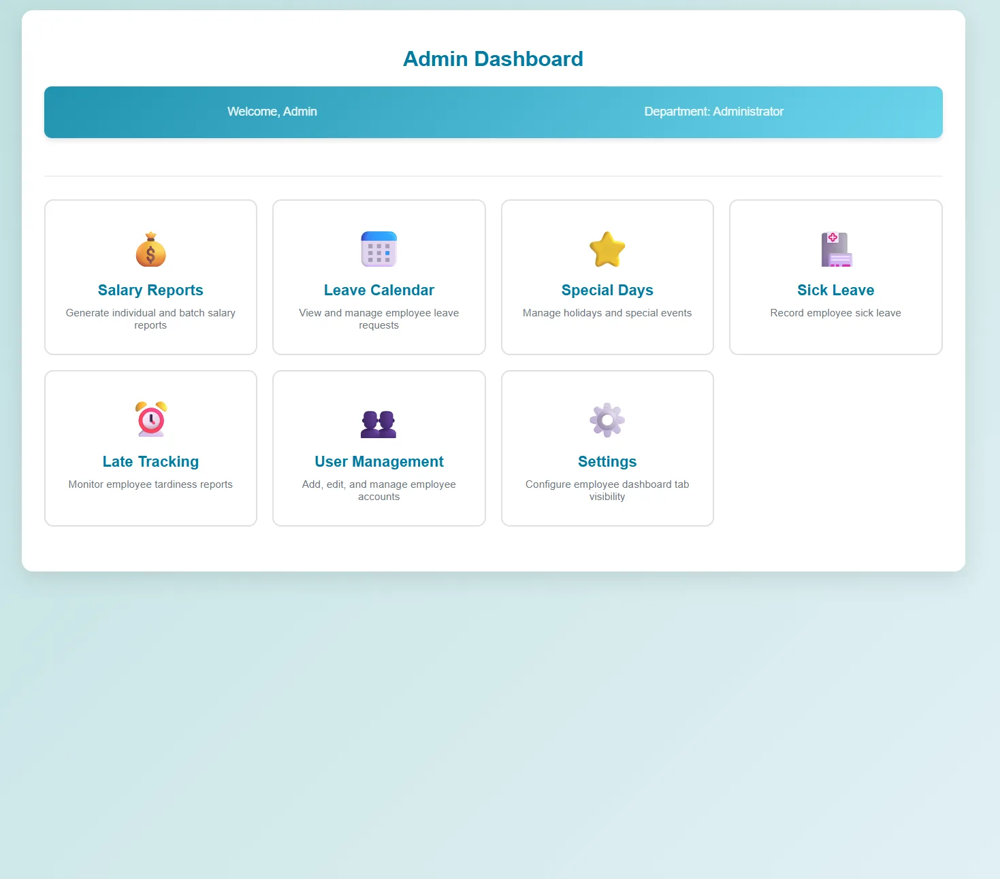
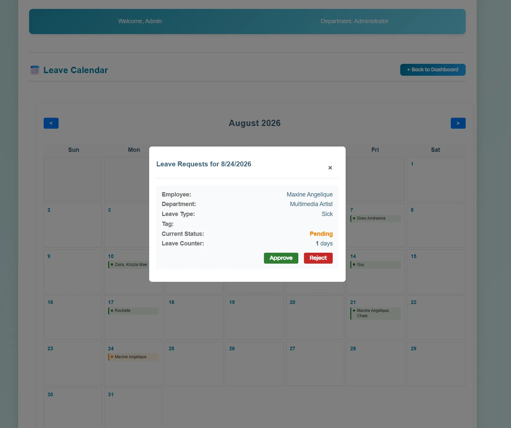

01 / INTERNAL SYSTEM
View full ↗





Featured Project
Employee Management System
Built an internal employee management web application from the ground up, using Google Sheets as the database and Google Apps Script for the backend logic. Continuously expanded it with features based on the team's needs, and it's been used operationally, every day, for over a year.
Handles daily clock in/out and attendance, leave requests with a team calendar and approval workflow, sick leave and late tracking, auto-generated salary reports by date range, and an admin panel for managing users and permissions.
Now redeveloping it on Node.js and Supabase to scale beyond spreadsheets.
Google Sheets
Apps Script
Node.js
Supabase